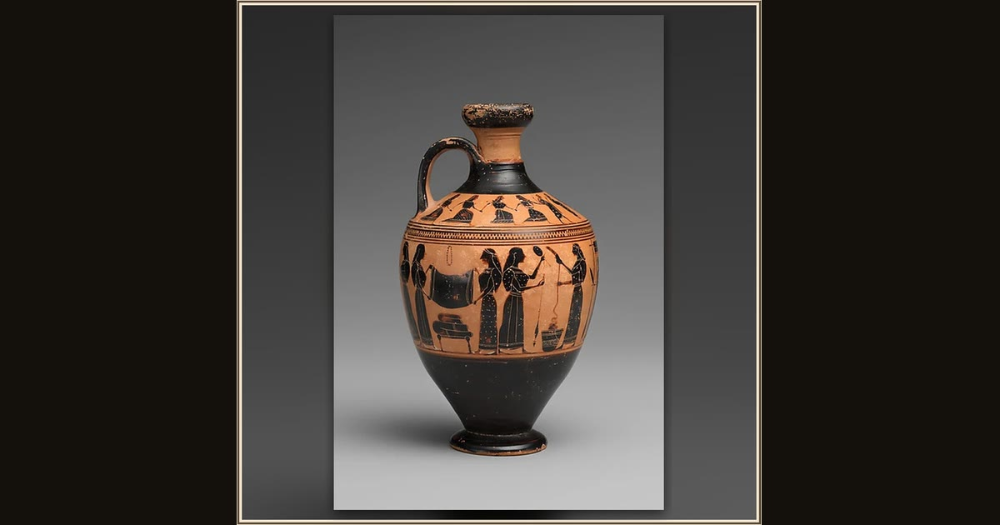

Terracotta lekythos (oil flask)
Attributed to the Amasis Painter · ca. 550–530 BCE · The Metropolitan Museum of Art · New York, USA
The painted bands on this little oil flask show women weighing out wool and weaving at a tall upright loom — the very craft Telemachus sends Penelope back to when he first finds his voice. An Athenian artist we call the Amasis Painter made it about 2,500 years